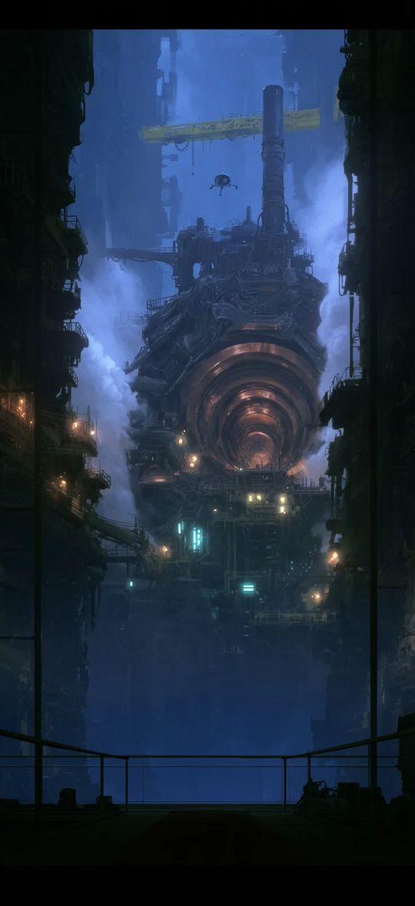
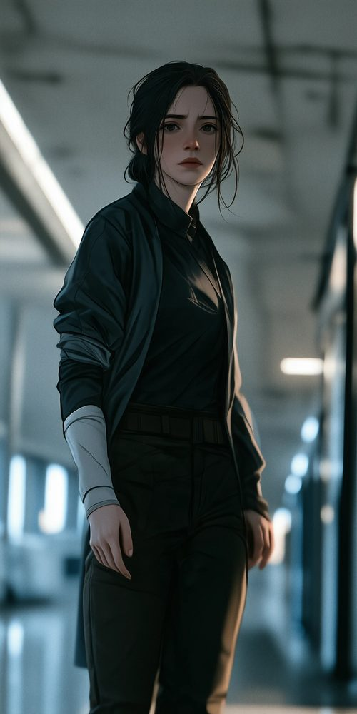
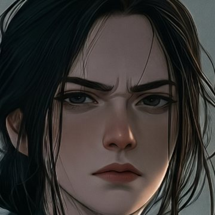
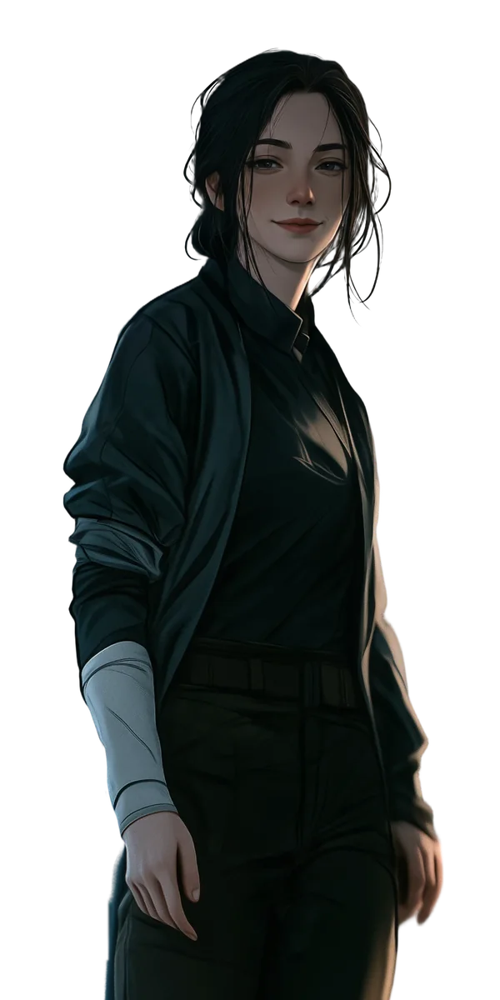

Готовится к старту продаж
Мобильная игра интерактивных историй
Novella — игра
на собственном движке
Интерактивные истории для iOS и Android в жанре League of Dreamers. Свой порт Ink на Dart, клиент на Flutter, сервер на Supabase, покупки в трёх магазинах и арт, собранный нейросетями и собственными инструментами. Первые сцены можно сыграть прямо здесь.
- 484автотеста: от рантайма до сервера
- 23 тыс.строк кода: Dart, SQL, Python
- 3 магазинаApp Store, Google Play, RuStore

Веб-реконструкция плеера: сценарий, арт и правила интерфейса взяты из игры. В приложении ту же сцену рисует Flutter. Выбор с кристаллом платный.
Продукт
Истории, где контент — это данные
Игрок читает историю и выбирает реплики и поступки. От выборов меняются отношения с героями и следующие сцены. Новые главы должны выходить регулярно, поэтому истории живут на сервере, а приложение их только проигрывает.
Сцена
Фон, до трёх персонажей, реплика и выборы. Героиня выезжает слева, когда говорит или думает.
Ветвления и память
Переменные Ink: отношения, флаги, характер героини. Решения переносятся между главами.
Платные выборы
Особые реплики и сцены за кристаллы. Цену назначает сервер, а не клиент.
Билеты на главы
Не больше двух, +1 каждые два часа. Без билета — реклама за награду или кристаллы.
Герой игрока
Имя и внешность в начале истории, гардероб и покупные наряды по сюжету.
Сохранения
Продолжение с любой реплики. Копия на сервере, вход с другого устройства.
Каталог
Полки по жанрам, «Продолжить», плашки «Новинка» и «Новая глава».
Только онлайн
Кошелёк и покупки живут на сервере. Без связи игра показывает экран переподключения.
Первая история: «Интерференция»
Фантастика 16+. Глава 1: 11 сцен, 8 развилок, 2 платных выбора. Восемь из 14 живых фонов главы — ниже.


Персонажи
Наведите или нажмите на героя, чтобы увидеть другую эмоцию.
 Мира Ковальфизик ASTERION, героиня игрока
Мира Ковальфизик ASTERION, героиня игрока Элиас Хартманнруководитель группы
Элиас Хартманнруководитель группы Адриан ВоссHelix Quantum Systems
Адриан ВоссHelix Quantum Systems Самира Рахальинженер Q-Lattice
Самира Рахальинженер Q-Lattice Виктор Ковальдедушка Миры
Виктор Ковальдедушка Миры
Архитектура
Три потока: контент, игра, деньги
Монорепозиторий: приложение, три пакета на чистом Dart, инструменты и сервер. Пакеты не зависят от Flutter, поэтому движок и экономика тестируются без устройства и без интерфейса.
Репозиторий73 коммита
novella/ ├── app/ Flutter: каталог, плеер, магазин, аккаунт ├── packages/ │ ├── ink_runtime/ порт inkjs 2.4.0 → Dart, 224 теста │ ├── story_engine/ реплики, @команды, платные выборы │ └── billing/ интерфейсы покупок и рекламы + фейки ├── tools/ │ ├── story_cli/ validate · art · build · publish · server │ ├── ink_compiler/ .ink → JSON через inklecate │ └── art/ Python: вырезка, слои, видео, звук ├── content/stories/ история: манифест, сценарий, арт по главам ├── supabase/ миграции, Edge Functions, SQL-проверки └── docs/ архитектура, решения, статус
Клиент
- Flutter
- Dart
- Riverpod 3
- go_router
- video_player
- audioplayers
- shared_preferences
Сценарий
- Ink
- Inky
- inklecate
Сервер
- Supabase
- Postgres + RLS
- Edge Functions · TypeScript
- Storage
Платформы
- StoreKit
- Google Play Billing
- RuStore Billing
- Яндекс Реклама
- AppMetrica
- Firebase Messaging
Инструменты
- Python · uv
- NumPy
- OpenCV
- ffmpeg
- Node
Движок
Свой рантайм Ink и жанровый слой над ним
Порт рантайма Ink на Dart
inkjs 2.4.0 переписан с TypeScript на чистый Dart. API повторяет официальный:
continueStory,currentChoices,variablesState, состояние в JSON. Где inkjs расходится с оригиналом на C# (целые и дробные числа, истинность значений), порт следует C#. Проходят 224 портированных теста inkjs.Команды сцены строками
Фон, персонажей и музыку сценарист ставит строками
@bg,@show,@music. Внешние функции Ink для этого не годятся: рантайм вызывает их, когда заглядывает вперёд, и команда сработала бы раньше реплики.story_engine: поток Ink → события
Реплика, команда, выборы, изменение переменной, конец. Движок держит
SceneState— что сейчас на экране — и снимок для сохранения. Плеер подписан на события и про Ink не знает.Сохранения переживают правки
У каждой главы есть отпечаток структуры без текста (FNV-1a 64). Текст вышедшей главы можно править. Если поменялась структура, глава начинается с контрольной точки, а покупки остаются.
Платных глав нет в приложении
Сборщик выносит их узлы на сервер. Клиент получает главу после покупки и вставляет в историю, поэтому из сборки её не достать.
ch1/ink/ch1.inkсцена из фрагмента выше
// SCENE 02 — зал управления, брифинг Элиаса. @bg control_room fade @music work_calm Зал управления ASTERION. Полукруг экранов… @show Элиас center neutral fade Элиас (amused): Коваль, если сегодня Вселенная решит нарушить Стандартную модель… Я (amused): Поставлю ей дедлайн. * [Ответить так же сухо] ~ rel_elias += 2 Я (neutral): Остаточные корреляции между… * [Уколоть его при команде] ~ rel_elias += 1 ~ risk += 1 Я (amused): А если Вселенная не уложится… * [«Ты тоже не спал?» #premium:20 #id:ch1_elias_private] ~ rel_elias += 3 Элиас (surprised): ... - За его плечом открывается дверь…
Клиент
Flutter-клиент и плеер сцены
Riverpod 3 для состояния и зависимостей, go_router для экранов. Окружения — JSON-конфиги: сервер, магазин, реклама и ID товаров выбираются при сборке. Неполный конфиг включает тестовые заглушки и пишет проблему в лог вместо падения.
- 4перехода фонаfade_black, fade_white…
- 12появленийfrom_right, silhouette…
- 9уходовto_left, dust…
- 11действийnod, recoil, pulse…
- 4эффекта экранаshake, flash, glitch…
- 40анимаций в каталоге движка, сценарист вызывает их по имени
Живые фоны
Видео-петля поверх картинки на video_player. В вебе и при системном «уменьшить движение» — только картинка.
Персонажи слоями
Тело, одежда и лицо эмоции на холсте 1200×2400. Говорящий подсвечен, остальные приглушены.
Печать текста
22 мс на знак, тап дописывает строку. Невидимый хвост держит высоту плашки, текст не прыгает.
Меню паузы
Журнал прочитанного (200 последних записей), отношения с героями, настройки.
Экраны
Каталог, история, создание героя, гардероб, магазин, аккаунт, документы и согласие.
Звук
Музыка и звуки сцены через AudioService с учётом настроек игрока.
Уведомления
Локальные: билеты, напоминания через 1 и 3 дня, тихие часы. Push о новой главе.
Аналитика
События воронки в AppMetrica после согласия игрока. Выручка — после выдачи покупки сервером.
Сервер
Сервер отвечает за деньги и прогресс
Supabase: Postgres, Storage и Edge Functions. Клиент не может изменить баланс напрямую. Он вызывает функцию, которая сверит цену, заблокирует строку кошелька и запишет операцию в журнал.
Идемпотентные покупки
Каждое списание идёт по ключу вида
interference:choice:ch1_elias_private. Повтор запроса не спишет кристаллы дважды.Цены на сервере
Прайс-лист привязан к версии истории. Если клиент прислал устаревшую цену, сервер отвечает
price_changed.Покупки в магазинах
Edge Function
purchaseпроверяет оплату и начисляет один раз на транзакцию. В магазине покупка закрывается только после начисления, недовыданное довыдаётся при запуске.Вход и профиль
Игрок начинает гостем с анонимным профилем. Позже привязывает VK ID или Яндекс ID (через свой OAuth-мост), Google или Apple. Удаление профиля сделано по требованию магазинов.
Публикация контента
Файлы лежат в Storage под хешем содержимого, неизменённые не перезаливаются. Черновик видят только тестировщики, выпуск — одна команда с push о новой главе.
Функции кошелькаPostgres
wallet_state() → кошелёк создаётся при первом входе spend(key, currency, price) → ok | already_purchased | insufficient_funds | unknown_item | price_changed claim_ad_reward(placement) → ok | limit_reached -- 3 в сутки по Москве chapter_content(story, version, chapter) → ok + узел главы | locked | not_found -- Каждая функция возвращает новое состояние -- кошелька. Схема private не видна через API, -- в public игрок читает только свои строки (RLS).
10 миграций3 Edge Functions6 SQL-проверок30 тестов функций
Арт и нейросети
Нейросети рисуют, свои скрипты делают арт игровым
Художника в команде нет. Персонажей и локации генерируют нейросети. Вырезку, единый холст, эмоции без смены лица, живые фоны и звук обрабатывают собственные инструменты: story_cli art собирает только изменённое.
-

Midjourney
Один принятый кадр на персонажа: поза, одежда, свет. Так же генерируются фоны и обложка.
-
спокойствие улыбка скепсис удивление страх 
злость Nano Banana Google Gemini
Эмоции из вырезки головы: меняются только брови, веки, глаза и рот. Лицо, причёска и свет остаются теми же.
-
BiRefNet
Фон убирается локально, цвет полупрозрачных краёв очищается, чтобы на тёмных сценах не было ореола. Фигура ставится на холст по шаблону: макушка — 5% от верха.
-

В игре
Лица вклеиваются в кадр, слои собираются в сцене. Пять персонажей, от трёх до шести эмоций у каждого.
Живые фоны
Свой VFX на Python вместо видеонейросетей
Статичный кадр оживает процедурно, на NumPy и OpenCV. Движется только названное, остальное стоит на месте, поэтому кадр не «плывёт», как у генеративного видео. Сцена — небольшой файл со списком эффектов и координатами. Петля замкнута: последний кадр совпадает с первым, стык проверяется автоматически.
- Пар и туман
billow - Пылинки в луче
motes - Лучи света и bloom
light - Волна по кольцам
glow_wave - Мерцание огней
twinkle - Бегущие экраны
scrolling - Поток в шахте лифта
rushing - Искажение «наложения»
overlap
Видео под телефон. H.264 до 1080×1920, CRF 23, без звука: играет аппаратно на любом устройстве. 14 петель по 30 секунд.
Звук. WAV приводится к −18/−16 LUFS с лимитером и пережимается в AAC. Громкость всех сцен одинаковая.
Какие ИИ-сервисы использовались
Всё, что ниже, — инструменты в руках команды. Решения и проверка остаются за людьми.
| Claude CodeAnthropic | Основной инструмент разработки. Архитектура и решения — мои, код, тесты и документацию пишу в паре с моделью. Каркас сценария главы 1 собран по библии игры, сценарист его расширяет. |
|---|---|
| Midjourneyгенерация изображений | Персонажи, 14 локаций главы 1, обложка. Отдельная Prompt Bible держит единый стиль. |
| Nano BananaGoogle Gemini | Эмоции персонажей правкой исходного кадра: одна вырезка головы, один промпт на эмоцию. |
| BiRefNetлокально | Вырезка фигур из фона с коммерческой лицензией. Около 4 секунд на картинку. |
| SegFormerлокально | Сегментация одежды и волос: слои героини для смены нарядов и перекраски. |
Как устроена работа с моделью
Архитектура, принятые решения и текущий статус ведутся в репозитории как документы. По ним модель, сценарист и я работаем по одним правилам. Любое изменение проходит через тесты: движок, экономика и сервер проверяются без устройства, поэтому быстрый темп не ломает уже сделанное.
Качество
484 автотеста на каждый слой
Рантайм проверяется тестами самого inkjs, сервер — SQL-проверками и тестами функций в Node, арт-пайплайн — на Python. Приложение покрыто тестами плеера, глав, кошелька, синхронизации сохранений, магазина и входа.
Статус
Готовится к старту продаж
Вертикальный срез работает от каталога до конца главы, покупки проходят через тестовый магазин. Сейчас продукт готовится к публикации в магазинах и к запуску продаж.
-
Готово
- Движок, плеер и 40 анимаций сцены
- Экономика: кристаллы, билеты, платные выборы, реклама за награду
- Сервер: кошелёк, покупки, сохранения, публикация контента
- Вход через аккаунты, удаление профиля, документы и согласие
- Аналитика, локальные уведомления и push
- Первая история: 5 персонажей, 14 живых фонов, каркас главы 1
-
Сейчас
- Товары и песочницы App Store, Google Play и RuStore
- Боевой сервер в России под 152-ФЗ
- Провайдеры входа и защита от ботов на боевых ключах
- Полный текст главы 1 и звук
-
Дальше
- Старт продаж
- Новые главы по расписанию
- Анимация персонажей в Spine со скинами
Дальше
Код и архитектуру покажу на собеседовании
Можно пройти по любому слою: рантайм Ink, плеер, экономику на сервере или арт-пайплайн.